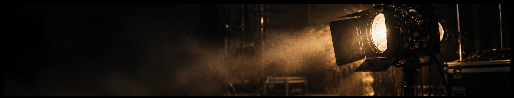

/Sound Mixer_
/Sound Designer_
/Music Producer_
Sound for picture, from editing and sound design through to mixing. Music production, composition and mixing.

Sound for Picture
Film • Games • Sound Design • Mixing
Music
Composition • Production • Mixing